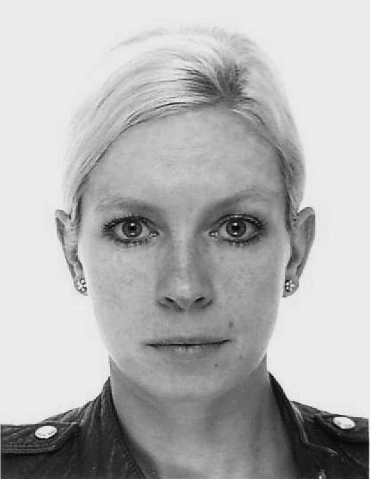

CELLS: Workshop on Computing among Cells
October 14th, 2019 in Budapest, Hungary
CELLS: Workshop on Computing among Cells
October 14th, 2019 in Budapest, HungaryDISC'19
DISC'19
CELLS is a DISC 2019 workshop. Please see the DISC page for further information.
Scope
Scope
The workshop is intended to cover topics both from computer science and microbiology with a focus on computation emerging from microbiological units (bacteria, viruses, DNA, etc.) interacting with each other.
Topics include, but are not limited to: synthetic biology, bacterial computing, DNA computing, population protocols, Markov chains, modeling with cellular automata, infection models, and evolutionary models.
Speakers
Speakers
Janna Burman (Université Paris-Saclay)
 Janna Burman is an assistant professor (Maître de Conference) in Computer Science at South-Paris University, since 2013. She received her Ph.D. in 2010 from Technion - Israel Institute of Technology, and did her post-docs at INRIA Sophia-Antipolis (2010 - 2011) and INRIA-Saclay (2011-2013). She is carrying out her research at LRI - Laboratoire de Recherche en Informatique, in the Parallel Systems team. Her main research interests are distributed algorithms and systems, with a particular focus on networks of mobile agents, self-stabilization, fault-tolerance, population protocols and the beeping model.
Abstract. The communication model of population protocols is a popular model of distributed computing. It describes a collection of anonymous and identically programmed computational nodes interacting in pairs. Their interactions are scheduled by an adversary, subject to a fairness constraint. In an interaction, the two agents exchange and update their internal states, according to a transition function (the protocol). This model is motivated by mobile ad-hoc networks of highly-restricted computational nodes with little control over their movements. It bears a strong resemblance to models of chemical reactions (CRNs), gene regulatory networks, Petri nets, and many more. In this tutorial, we will give the basics of population protocols and an overview of what can be computed and which distributed tasks can be solved in this model and its variants. We will also discuss its relation to CRNs.
Alexander Fedorec (University College London)
Alex is a Research Fellow at University College London in the Division of Biosciences. His current focus is on the design of synthetic microbial communities and their application in healthcare and industrial biotechnology. He received his PhD in Synthetic Biology from University College London and his Masters degree in Modelling Biological Complexity from the same institution. His Bachelor's degree in Computer Science was undertaken at the University of Bath, where he developed an interest in using models to understand Natural Intelligence. He has worked in industry as a software engineer for Research In Motion (now BlackBerry).
Abstract. Synthetic biology has largely focused on developing ever more complex, robust or sensitive genetic circuits to carry out a multitude of functions from computation to bio-production within a single host strain. However, it has long been known that there are limits to what can be achieved due, primarily, to increased burden. As such, the distribution of genetic circuits between multiple strains within a community can be used as a method to reduce the burden on individual cells, along with many other potential advantages. However, due to the principle of competitive exclusion, maintaining multiple strains within a community is a non-trivial task to which no satisfactory solution has yet been developed. Here, we will discuss a number of different mechanisms that may enable co-existence. We will demonstrate the use of reinforcement learning to train an agent to control an environment in order to allow two or more species to be held at desired population densities. Further, for applications in which we have no environmental control, we will illustrate a Bayesian method that allows us to explore vast model spaces in order to choose system designs that can feasibly produce stable communities. Finally, we will demonstrate the process of instantiating one such system and verifying its function. As the systems that we design become more complex, control will be needed at the community as well as the cellular level and approaches such as these will become ever more critical.
Thomas Gorochowski (University of Bristol)
Thomas Gorochowski is a Royal Society University Research Fellow at the University of Bristol, UK and heads up the Biocompute Lab (www.biocomputelab.org) within the School of Biological Sciences. His research is focused on better understanding the computational architecture of biological systems from the molecular to ecosystem level and developing tools to enable the rational engineering of new functionalities across these scales.
Abstract. Synthetic genetic circuits are composed of many interconnected parts that must function together in concert to implement desired biological computations. A major challenge when developing new circuits is that genetic parts often display unexpected changes in their performance when used in new ways. These arise due to contextual effects or unintended interactions with the host cell. In this talk, I will demonstrate how we have been using sequencing technologies and mathematical modelling to tackle this problem. First, I will show how RNA-sequencing can be used to measure the function of every transcriptional part making up large genetic circuits. This enables us to better understand why some designs fail and helps pin point the root cause. Then, I will present some recent work where we combined RNA-sequencing with ribosome profiling and RNA spike-in standards to enable the first large-scale characterisation of transcriptional and translational parts in absolute units. Such capabilities provide a more complete and quantitative view of the inner workings of genetic circuits and improve our understanding of the rules governing the effective construction of larger and more complex biological systems.
Alfonso Jaramillo (University of Warwick)
 After a PhD in Particle Physics (1999), AJ he worked on the computational design of proteins, using molecular modeling techniques. Afterwards, after moving as Assistant Professor to Ecole Polytechnique, he developed computational design methods for metabolic networks, transcriptional networks, and particularly RNA networks. In 2009, after moving to CNRS-Genopole as senior researcher, he started his experimental microbiology lab where he could validate experimentally his computational methodologies. He then developed and used automated microscopy and microfluidics chips for single-cell validations. In 2013, he moved to the University of Warwick as Full Professor, where he is developing new cell-culture bioreactors for directed evolution, which he applies to engineer the first synthetic bacteriophage. He also is developing a novel gene regulation relying on RNA. He has coordinated several Synthetic Biology international consortia and he is member of the editorial boards of ACS Synthetic Biology and the J. of Biol. Engineering.
After a PhD in Particle Physics (1999), AJ he worked on the computational design of proteins, using molecular modeling techniques. Afterwards, after moving as Assistant Professor to Ecole Polytechnique, he developed computational design methods for metabolic networks, transcriptional networks, and particularly RNA networks. In 2009, after moving to CNRS-Genopole as senior researcher, he started his experimental microbiology lab where he could validate experimentally his computational methodologies. He then developed and used automated microscopy and microfluidics chips for single-cell validations. In 2013, he moved to the University of Warwick as Full Professor, where he is developing new cell-culture bioreactors for directed evolution, which he applies to engineer the first synthetic bacteriophage. He also is developing a novel gene regulation relying on RNA. He has coordinated several Synthetic Biology international consortia and he is member of the editorial boards of ACS Synthetic Biology and the J. of Biol. Engineering.
Manish Kushwaha (Micalis Institute, INRA)
Manish Kushwaha is a Research Scientist (Chargé de Recherche) at the Micalis Institute, INRA Jouy-en-Josas, France. His research interests lie in the areas of synthetic biology, systems biology, and metabolic engineering. More specifically, his work is focussed on improving the predictable and automatable design of intra- and intercellular synthetic genetic circuits and metabolic pathways, while expanding their cross-species compatibility.
Abstract. In the last two decades, Synthetic Biology has seen the development of several biological circuits and devices for a wide variety of applications. These have been implemented at different layers of biological information processing: the genetic layer, the metabolic layer, or the signal transduction layer. Taking early inspiration from electronics, most biological circuits in this time have used a digital abstraction of input-output signals while still using a relatively analogue machinery. In this tutorial, I will present an overview of how ideas from engineering and computing have been applied in synthetic biology so far, and what may be possible in the future.
Ana Zuniga-Sepulveda (Centre de Biochimie Structurale de Montpellier)
Ana is a postdoctoral researcher in the synthetic biology team of Jerome Bonnet at the Centre de Biochimie Structurale in Montpellier, France. She received her PhD in Biological sciences from Pontifical Catholic University of Chile and did her first postdoctoral research with Gonzalo Ruz in the Faculty of Engineering and Sciences at Universidad Adolfo Ibáñez, applying Boolean networks and gene regulatory networks in synthetic bacterial consortium. Now she is focused on the engineering of synthetic organism with rich signal processing abilities, applying genetic logic devices. She is implementing distributed multicellular computation as a tool to systematize the genetic circuit design, reuse biological components, and obtain predictable behavior in engineered bacteria.
Abstract. Genetic programs operating in a history-dependent fashion are ubiquitous in nature and govern sophisticated processes such as development and differentiation. The ability to systematically and predictably encode such programs would advance the engineering of synthetic organisms and ecosystems with rich signal processing abilities. Here we implement robust, scalable history-dependent programs by distributing the computational labor across a cellular population. Our design is based on recombinase-driven DNA scaffolds expressing different genes according to the order of occurrence of inputs. These multicellular computing systems are highly modular and any program can be built by differential composition of strains containing well-characterized logic scaffolds. We developed an automated workflow that researchers can use to streamline program design and optimization. We anticipate that the history-dependent programs presented here will support many applications using cellular populations for material engineering, biomanufacturing and healthcare.
Program
Program
Talks on October 14th, 2019:
- 09.00: Janna Burman: Tutorial on Population Protocols
- 10.00: Coffee break
- 10.30: Manish Kushwaha: Tutorial on Computing in Synthetic Biology
- 11.30: Thomas Gorochowski: Towards a Complete and Quantitative View of Genetic Circuit Function
- 12.30: Lunch break
- 14.00: Alexander Fedorec: Constructing Synthetic Microbial Communities
- 15.00: Ana Zuniga-Sepulveda: Rational programming of history-dependent logic in cellular populations
- 16.00: Coffee break
- 16.30: Alfonso Jaramillo
- 17.30: Discussion: Perspectives and Open Problems
Local
Local
For local information please consult the DISC local information page.
Commitee
Commitee
Matthias Függer, CNRS & LSV, ENS Paris-Saclay & Inria
Adrian Kosowski, Inria & IRIF
Manish Kushwaha, INRA & Micalis Institute
Thomas Nowak,
Université Paris-Sud
Sponsors
Sponsors

DigiCosme (working group HicDiesMeus)

Universite Paris-Saclay, Projets Emergents 2019 du Departement STIC (Depec Mode)